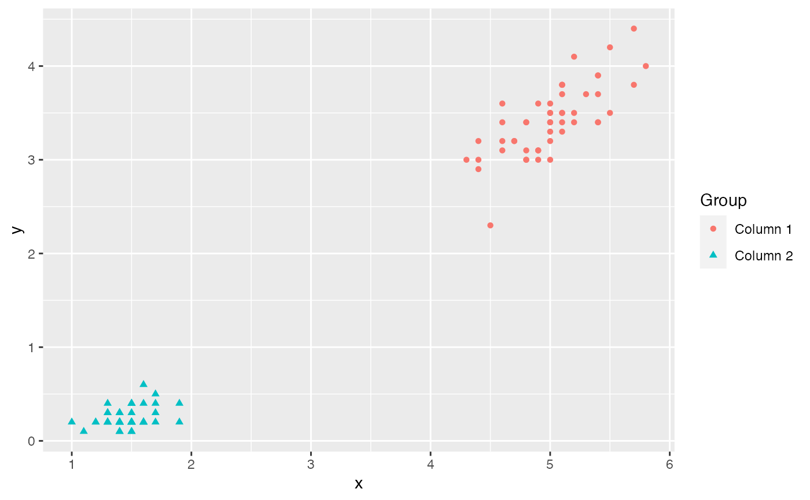

ggmatplot is a quick and easy way of plotting the columns of two matrices
or data frames against each other using
ggplot2.
ggmatplot( x, y, plot_type = "point", color = NULL, fill = NULL, shape = NULL, linetype = NULL, xlim = c(NA, NA), ylim = c(NA, NA), log = NULL, main = NULL, xlab = NULL, ylab = NULL, legend_label = NULL, legend_title = NULL, desc_stat = "mean_se", asp = NA, ... )
Arguments
| x, y | Vectors or matrices of data.
|
|---|---|
| plot_type | A string specifying the type of plot. Possible plot types
are |
| color, fill | Vectors of colors. Defining only one of them will update
both
|
| shape, linetype | A vector of shapes or line types respectively.
|
| xlim, ylim | Ranges of x and y axes.
|
| log | A string defining which axes to transform into a log scale.
( |
| main, xlab, ylab, legend_title | Strings to update plot title, x axis label, y axis label and legend title respectively. |
| legend_label | A vector of strings, to rename the legend labels. |
| desc_stat | Descriptive statistics to be used for visualizing errors,
in |
| asp | The y/x aspect ratio. |
| ... | Other arguments passed on to the plot. Possible arguments are those that can be passed on to the underlying ggplot layers. |
Plot Types
ggmatplotplots are built upon ggplot2 layers. The following is a list of
ggmatplot plot types, along with their underlying ggplot geoms
(https://ggplot2.tidyverse.org/reference/index.html#section-geoms) or
stats.
point
geom_pointline
geom_lineboth
geom_point+geom_linedensity
geom_densityhistogram
geom_histogramboxplot
geom_boxplotdotplot
geom_dotploterrorplot
geom_pointrangeviolin
geom_violinecdf
stat_ecdf
Examples
# Define a data set iris_sub <- subset(iris, Species == "setosa") ggmatplot(iris_sub[, c(1, 3)], iris_sub[, c(2, 4)])  # Modify legend label and axis ggmatplot(iris_sub[, c(1, 3)], iris_sub[, c(2, 4)], shape = c(4, 6), legend_label = c("Sepal", "Petal"), legend_title = "", xlab = "Length", ylab = "Width" )